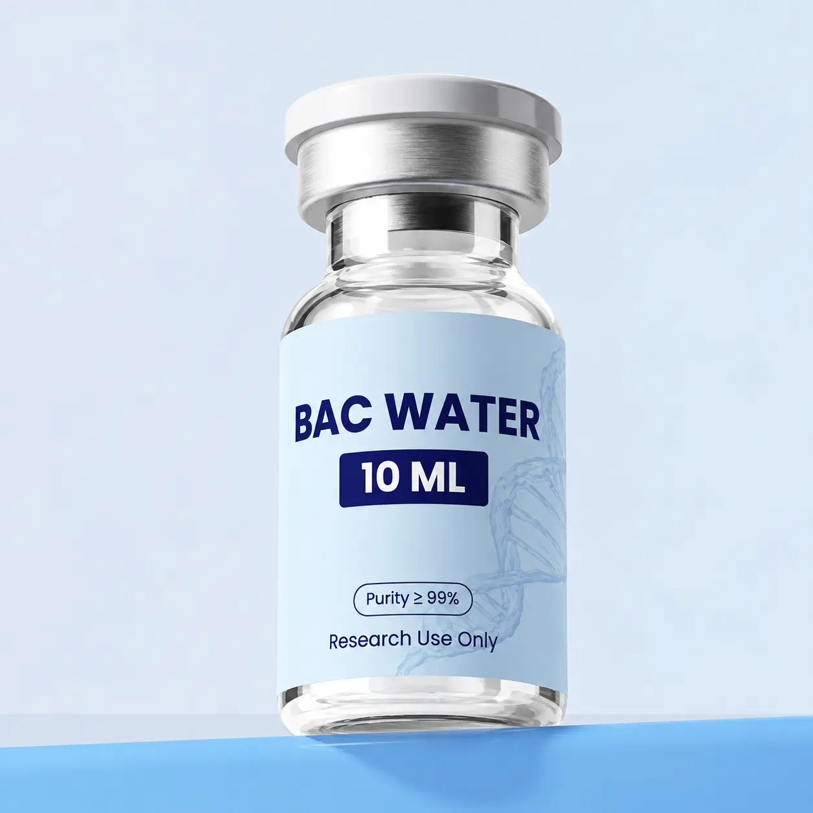

LAB SUPPLY / PRODUCT
BAC Water
BAC Water is listed as a laboratory supply alongside the research compound catalog. Confirm the container volume, full ingredients, and preservative concentration on the supplied label before ordering.
Product overview
BAC Water is listed as a laboratory supply alongside the research compound catalog. Confirm the container volume, full ingredients, and preservative concentration on the supplied label before ordering.
The catalog does not identify a manufacturer or publish a formulation for this item. A similarly named product from another seller may have a different composition.
Product specifications
- Catalog category
- Research Supply
- Compound class
- Laboratory water supply
Container volume, composition, preservative concentration, sterility status, and storage conditions await Glow Aminos documentation.
Certificate of analysis (COA)
No Glow Aminos batch-specific COA has been provided for this product. Check the COA library for published documents.
Shipping & returns
Shipping is a flat $10 per order. See shipping information and returns & refunds for current details.